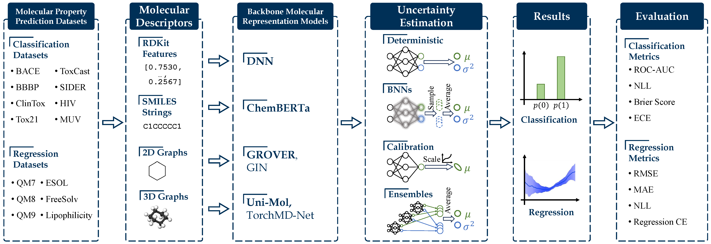

MUBen Documentation
This is the documentation for MUBen: Mulecular Uncertainty Benchmark.
The code is built to expose implementation details as much as possible and be easily extendable. Questions and suggestions are welcome if you find any issues while using our code.
About

MUBen is a benchmark that aims to investigate the performance of uncertainty quantification (UQ) methods built upon backbone molecular representation models. It implements 6 backbone models (4 pre-trained and 2 non-pre-trained), 8 UQ methods (8 compatible for classification and 6 for regression), and 14 datasets from MoleculeNet (8 for classification and 6 for regression). We are actively expanding the benchmark to include more backbones, UQ methods and datasets. This is an arduous task, and we welcome contribution or collaboration in any form.
Backbones
| Backbone Models | Paper | Official Repo | Our Implementation |
|---|---|---|---|
| Pre-Trained Backbones | |||
| ChemBERTa | link | link | link |
| GROVER | link | link | link |
| Uni-Mol | link | link | link |
| TorchMD-NET | Architecture; Pre-training | link | link |
| Non-Pre-Trained Backbones | |||
| DNN | - | - | link |
| GIN | link | pyg | link |
Uncertainty Quantification Methods
| UQ Method | Classification | Regression | Paper |
|---|---|---|---|
| Deterministic | ✅︎ | ✅︎ | - |
| Temperature Scaling | ✅︎ | - | link |
| Focal Loss | ✅︎ | - | link |
| Deep Ensembles | ✅︎ | ✅︎ | link |
| SWAG | ✅︎ | ✅︎ | link |
| Bayes by Backprop | ✅︎ | ✅︎ | link |
| SGLD | ✅︎ | ✅︎ | link |
| MC Dropout | ✅︎ | ✅︎ | link |
Data
Please check MoleculeNet for a detailed description. We use a subset of the MoleculeNet benckmark, including BBBP, Tox21, ToxCast, SIDER, ClinTox, BACE, MUV, HIV, ESOL, FreeSolv, Lipophilicity, QM7, QM8, QM9.
Data
A set of partitioned datasets are already included in this repo. You can find them under the
./data/folder: [scaffold split]; [random split].
We utilize the datasets prepared by Uni-Mol.
You find the data here or directly download it through this link.
We place the unzipped files into ./data/UniMol by default.
For convenience, you are suggested to rename the qm7dft, qm8dft, and qm9dft folders to qm7, qm8, and qm9.
Afterwards, you can transfer the dataset format into ours by running
PYTHONPATH="." python ./assist/dataset_build_from_unimol.py
suppose you are in the project root directory.
You can specify the input (Uni-Mol) and output data directories with --unimol_data_dir and --output_dir arguments.
The script will convert all datasets by default (excluding PCBA).
If you want to specify a subset of datasets, you can specify the argument --dataset_names with the target dataset names with lowercase letters.
Notice: If you would like to run the Uni-Mol model, you are suggested to keep the original UniMol data as we will use the pre-defined molecule conformations.
Otherwise, it is safe to remove the original data.
Ongoing Works
Active Learning
We are developing code to integrate active learning into the pipeline.
Specifically, we assume we have a small set of labeled data points (--n_init_instances) at the beginning.
Within each active learning iteration, we use the labeled dataset to fine-tune the model parameters and select a batch of data points (--n_al_select) from the unlabeled set with the least predicted certainty (i.e., max predicted entropy for classification and max predicted variance for regression).
The process is repeated for several loops (--n_al_loops), and the intermediate performance is tracked.
The code is still under construction and currently is only available under the dev branch.
In addition, several points are worth attention:
- Currently, only DNN and ChemBERTa backbones are supported (
./run/dnn_al.pyand./run/chemberta_al.py). Migrating AL to other backbones is not difficult but requires updating some Trainer functions if they are reloaded. - To enable active learning, make sure you set
--enable_active_learningtotrue. - Currently, Deep Ensembles is not supported for AL.
- We cannot guarantee the correctness of our implementation. If you notice any abnormalities in the code, please do not hesitate to post an issue.
One example is
python ./run/dnn_al.py \
--enable_active_learning \
--n_init_instances 100 \
--n_al_loops 20 \
--n_al_select 20 \
# other model and training hyper-parameters...
Citation
If you find our work helpful, please consider citing it as
@misc{li2023muben,
title={MUBen: Benchmarking the Uncertainty of Pre-Trained Models for Molecular Property Prediction},
author={Yinghao Li and Lingkai Kong and Yuanqi Du and Yue Yu and Yuchen Zhuang and Wenhao Mu and Chao Zhang},
year={2023},
eprint={2306.10060},
archivePrefix={arXiv},
primaryClass={physics.chem-ph}
}